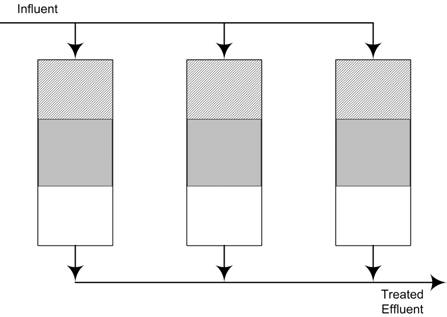

| Introduction | ||
| Activated Carbon is a general term used to describe a family
of carbonaceous material that is
used to filter out undesired impurities from a liquid or gas stream.
Activated carbon is a commonly used method
of purification. Most home filters such as
tap water filters, and the filter used in most home aquariums use
activated carbon as the filter media. What makes
it so common and unique is in the nature of its structure.
The structure is made up of a vast network of
pores that create crevasses where the impurities can adhere as shown in
Figure 1 below. |
|
|
| Figure 1.
Pore Network on Carbon Structure |
| This adhesion phenomenon is a physicochemical process called adsorption. Activated carbon has the strongest physical adsorption forces or the highest volume of adsorbing porosity of any material known (Cheremisinoff, 2002). This is attributed mainly to the large surface area that is created by the network of pores, which can be in excess of 1000 m2/g. To better envision this, 5 g of activated carbon would correlate to having the surface area of a football field as demonstrated below in Figure 2 (Cheremisinoff, 2002). |
|  | ||
| Figure 2. Comparison of Weight to Surface Area of Activated
Carbon |
||
| Adsorption via activated carbon is used mainly to remove organic compounds from air or water, but can also be used to remove some inorganic compounds. Once the majority of the surface area of the activated carbon is covered with the adsorbed impurities, the activated carbon is deemed exhausted and will no longer adsorb compounds onto its surface. For further adsorption to occur, the exhausted carbons will either need to be replaced or go through a process called Regeneration. Regeneration is usually completed through a thermal process in which the activated carbon will travel through a furnace and experience elevated temperature that destroy the adsorbed contaminates on the surface of the activated carbon. | ||